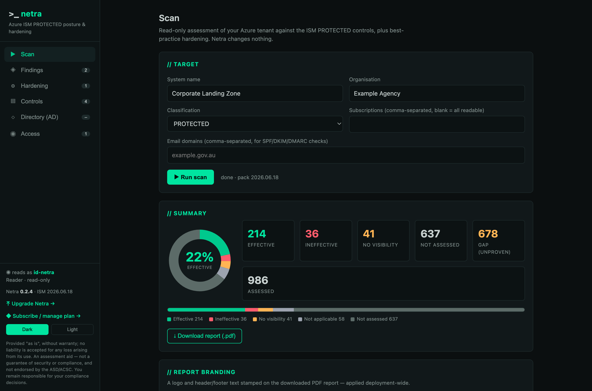
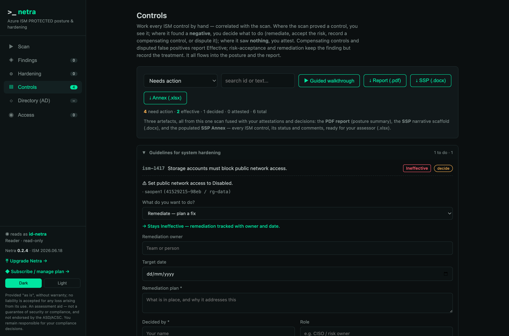
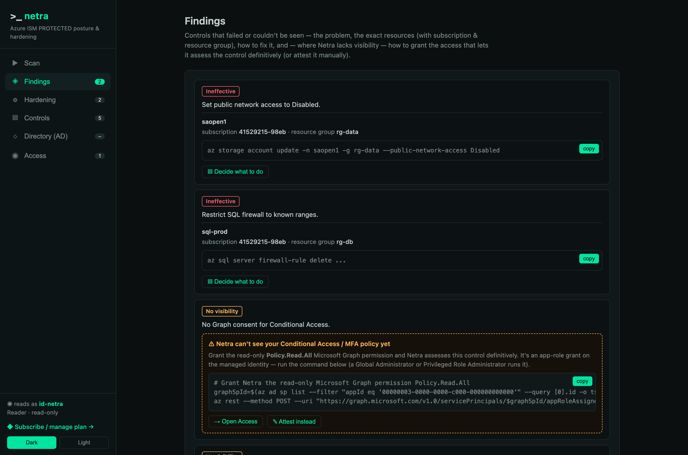
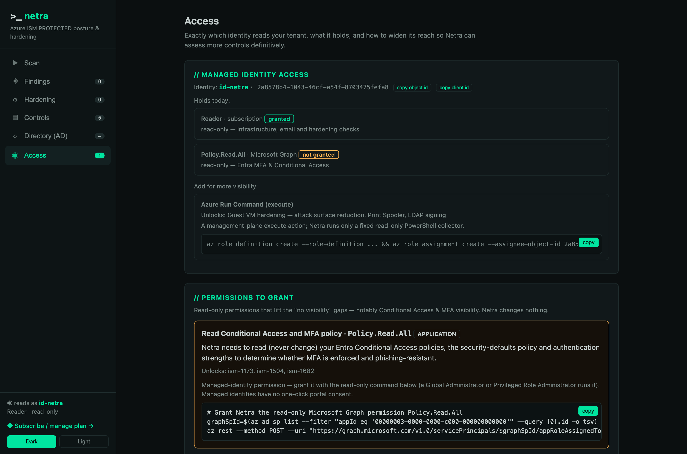

Netra documentation
01What it is
Netra deploys into your own Azure tenant and reads it — with nothing but the Reader role and, once you consent, a read-only Microsoft Graph permission. It reports where you stand against the Australian Government ISM at PROTECTED, and recommends best-practice hardening mapped to CIS, NIST 800-53, the Microsoft Cloud Security Benchmark and the ACSC Blueprint. It writes nothing to your tenant.

The console: a read-only scan of all 986 PROTECTED controls, a compliance donut, and a branded PDF report.
02Five evidence planes
| Plane | Reads | Needs | Status |
|---|---|---|---|
| Infrastructure | Azure Resource Graph — encryption, TLS, NSGs, backup, patch assessment | Reader | live |
| Public DNS — SPF, DKIM, DMARC, MTA-STS | nothing (public) | live | |
| Identity | Entra — MFA, Conditional Access, security defaults | Policy.Read.All (read-only) | consent |
| Guest | VM hardening — Machine Config & Azure Run Command (ASR, Print Spooler, LDAP signing) | runCommand/action | opt-in |
| Directory | AD account hardening over read-only LDAP (reversible encryption, Kerberos pre-auth, unconstrained delegation) | DC route + read credential | opt-in |
03Verdicts & honesty
Absence is never a pass. A control with no evidence is Not assessed; a check whose prerequisite is missing is No visibility; neither is Effective. Every technical mapping is partial — it proves a necessary condition, not the whole control — and states its limitations. Manual attestation covers the residual but can never override a determined machine finding: a person cannot sign away a real result.
04Controls, attestation & decisions
Every ISM control, correlated with the scan. Where the scan proved a control you see it; where it saw nothing you attest it (verdict, justification, attestor); and where it found a negative you decide what to do — remediate, accept the risk, record a compensating control, or dispute it. A compensating control or a disputed false positive reports Effective (the machine result kept alongside); risk-acceptance and remediation keep the finding and record the treatment. A guided walkthrough steps through everything that needs action.

A machine-negative control, and the operator deciding its treatment — tracked with owner, date and justification.
The one artefact your assessor needs is the merged PDF report: it fuses the machine scan with your attestations and decisions, so a compensating control or accepted risk shows against its control. Attestations and decisions are stored in the deployment's own managed Postgres, so they survive restarts and one-command upgrades.
05Install
From Azure Cloud Shell (Bash), in the target subscription:
curl -sL https://netra.run/install.sh | bash -s -- --region australiaeastThis creates a resource group rg-netra with a user-assigned managed identity, Log Analytics, and a single-replica Container App; registers an Entra app for sign-in; provisions a managed Postgres for your attestations and decisions; and grants the identity Reader on the subscription. Infrastructure, email and hardening checks work immediately.
Upgrading in place
Upgrades are a single command — an image-only roll. The database is untouched, and the app applies its Flyway schema migrations on startup, so code and schema move forward with zero data loss. It never re-runs the install stack (which would stand up a fresh, empty database).
curl -sL https://netra.run/upgrade.sh | bash # latest published version
curl -sL https://netra.run/upgrade.sh | bash -s -- --image-tag 0.3.1The app also checks the public version feed and shows an in-console banner when a newer version is available — the check runs in your browser, so the deployment makes no outbound call.
Active Directory line-of-sight (optional)
The Directory plane binds over LDAP from Netra's own network to a domain controller. A default install has no route to your DC subnet, so that plane reports "no DC reachable" until you give it line-of-sight. To enable it, run Netra inside your VNet and make sure that VNet can reach the DC:
- Create (or choose) a subnet for Netra's Container Apps environment — delegate it to
Microsoft.App/environments, size/23or larger. - Give that VNet a route to the DC's network — VNet peering (for an IaaS/AD DS DC in Azure), or a site-to-site VPN / ExpressRoute for on-premises.
- Allow 636/TCP (LDAPS) from Netra's subnet to the domain controller (NSG / firewall). Prefer LDAPS so the bind credential is never in the clear.
- Install with the subnet supplied — and, if you want the database private too, pass a delegated Postgres subnet and its private DNS zone (the DB then has no public endpoint):
curl -sL https://netra.run/install.sh | bash -s -- --region australiaeast \
--infrastructure-subnet /subscriptions/<sub>/resourceGroups/<rg>/providers/Microsoft.Network/virtualNetworks/<vnet>/subnets/<aca-subnet> \
--db-subnet /subscriptions/<sub>/.../subnets/<pg-subnet> \
--db-dns-zone /subscriptions/<sub>/.../privateDnsZones/privatelink.postgres.database.azure.comThen, in the console's Directory tab, supply a read-only directory account and hit Test & discover — Netra binds, confirms reachability, and discovers the naming context. It only ever reads.
--db-subnet makes Postgres VNet-private — no public endpoint and no firewall rule, reachable only from your VNet. Recommended for PROTECTED workloads. Without it, the database is public but password-protected and TLS-only, reachable over the Azure backbone.06Permissions & consent
When a plane needs a permission it isn't granted, Netra surfaces the ask in the console — with the reason, the controls it unlocks, and two ways to grant it:
One-click portal consent
A deep link straight to the admin-consent flow for Netra's app.
Azure CLI grant
graphSpId=$(az ad sp list --filter "appId eq '00000003-0000-0000-c000-000000000000'" --query '[0].id' -o tsv)
roleId=$(az ad sp show --id 00000003-0000-0000-c000-000000000000 \
--query "appRoles[?value=='Policy.Read.All'].id | [0]" -o tsv)
az rest --method POST \
--uri "https://graph.microsoft.com/v1.0/servicePrincipals/$graphSpId/appRoleAssignedTo" \
--body "{\"principalId\":\"<NETRA_MI_OBJECT_ID>\",\"resourceId\":\"$graphSpId\",\"appRoleId\":\"$roleId\"}"The console pre-fills your managed identity's object id. Every permission Netra asks for is read-only.

A no-visibility finding shows the exact read-only grant that lets Netra assess it definitively — or attest it instead.
07Managed identity
Netra reads your tenant as a user-assigned managed identity named netra-mi. The console shows it prominently — its object id, client id, and that it holds Reader and nothing else. There is no service account password and no baked secret; Azure access is via the managed identity, and the only secret is the Entra sign-in client secret, injected as a Container App secret.

The Access tab names the exact managed identity reading your tenant, what it holds today, and how to widen it.
08Teardown
az stack group delete --name netra -g rg-netra --action-on-unmanage deleteAll --yes
az group delete -n rg-netra --yes
# then remove the Reader role assignment and the Entra app (ids printed by the installer)09Frameworks
One scan, mapped to every framework a finding touches — pinned to versions:
| Framework | Version |
|---|---|
| Australian Government ISM (PROTECTED) | ASD OSCAL release |
| CIS Microsoft Azure Foundations Benchmark | v2.0.0 |
| CIS Microsoft 365 Foundations Benchmark | v4.0.0 |
| NIST SP 800-53 | Rev. 5 |
| Microsoft Cloud Security Benchmark | v1 |
| ASD Blueprint for Secure Cloud | current |
10Security posture
Read-only by construction (Reader; Resource Graph has no mutation API). No baked secrets — managed identity for Azure. Entra OIDC sign-in, fail-closed. The higher-privilege guest and directory planes are opt-in and off by default. Attestations, decisions and branding persist in the deployment’s own managed Postgres, so upgrades preserve them. The install templates are public and the full source is available to security teams on request — security@netra.run.